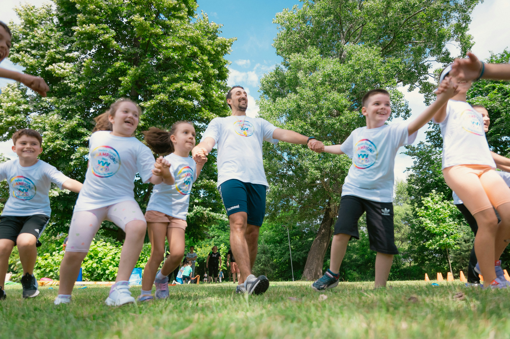
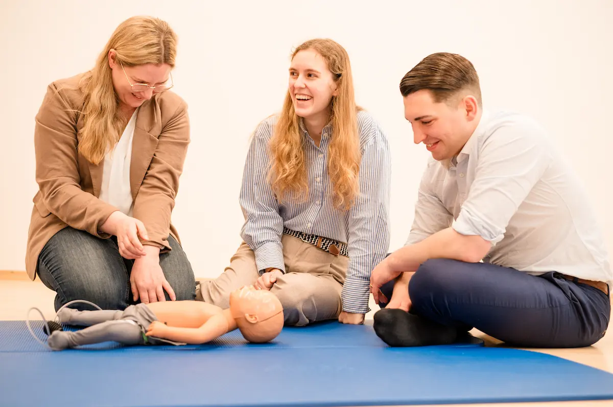
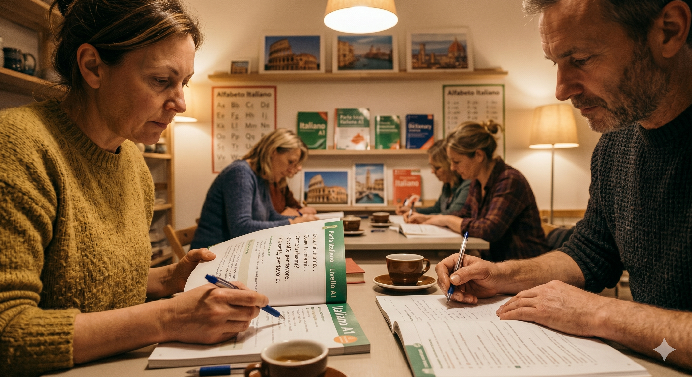

Zwei Prompts. Zwei Ergebnisse. Eine Frage:
Welcher Text taugt für die nächste Kursausschreibung?
Rolle: Du bist Programmplanerin an einer kleinen VHS in Oberfranken. Aufgabe: Schreibe einen Ausschreibungstext für einen Aquarell-Anfängerkurs (4 Termine, je 90 Min, Donnerstag 18:00). Zielgruppe: Berufstätige zwischen 40 und 65, keine Vorkenntnisse, suchen Ausgleich zum Alltag. Bedingungen: - max. 90 Wörter - 1 Bedürfnis ansprechen (Entschleunigung) - konkret nennen: Material wird gestellt - Schluss-Satz mit klarer Handlungsaufforderung Vermeide: „spannend", „eintauchen", „faszinierend", „umfassend".
Vier Donnerstagabende, in denen Sie das Tempo selbst bestimmen. Mit Pinsel, Wasser und Farbe entstehen erste eigene Bilder — auch wenn Sie seit der Schulzeit nichts mehr gemalt haben.
Sie brauchen nichts mitzubringen: Papier, Farben und Pinsel sind im Kursraum bereit. Was bleibt, sind 90 Minuten ohne Bildschirm und vier kleine Werke zum Mitnehmen.
Anmeldung bis 15. September im VHS-Büro oder online.
Schreibe einen kurzen Ausschreibungstext für einen Aquarellkurs an der VHS Hof. Der Kurs ist für Anfänger, findet abends statt und soll Lust auf kreative Abwechslung machen. Halte den Text einladend und freundlich.
Dieser Aquarellkurs richtet sich an alle, die in die Welt der Aquarellmalerei eintauchen möchten. In entspannter Atmosphäre lernen Sie die Grundlagen der Aquarelltechnik kennen.
Der Kurs vermittelt einen umfassenden Einblick in die faszinierende Welt der Wasserfarben. Sie werden begeistert sein, was Sie alles lernen können.
Rolle: Du bist Marketingexpertin für eine regionale Volkshochschule. Aufgabe: Schreibe 5 Betreffzeilen für den VHS-Newsletter im Mai. Zielgruppe: Stammleser, 40–70, an Weiterbildung interessiert. Stil: kurz, aktivierend, keine Ausrufezeichen. Gib mir verschiedene Varianten (sachlich, emotional, neugierig machend).
1. Weiterbildung im Frühling — Ihr Mai-Programm ist da
2. Was lernen Sie diesen Monat Neues?
3. Fünf Kurse für den Feierabend, die sich lohnen
Rolle: Newsletter-Profi für lokale Bildung. Aufgabe: 5 Betreffzeilen für Mai 2026. Anker: 1 konkretes Ereignis (Pfingstferien), 1 konkreter Kurs (Erste-Hilfe-Auffrischung, 17. Mai), 1 Schmerzpunkt (Anmeldungen schließen in 6 Tagen). Stil: kurz (max. 55 Zeichen), keine Floskeln („spannend", „neu"), kein Caps-Lock, max. 1 Emoji nur wenn nötig. V1: Frage. V2: Zahl. V3: Datum. V4: Insider-Ton. V5: Gegenteil-Effekt.
1. Erste Hilfe in 4 Stunden — 17. Mai, noch 3 Plätze
2. Was Pfingsten in Hof unterscheidet (4 Kurse drin)
3. Lieber zu Hause? Auch okay — aber lesen Sie das hier
Du schreibst für die Instagram-Followerschaft der VHS Hof (Frauen 35–60, eher introvertiert, keine Influencer-Sprache). Aufgabe: 1 Post über Yoga-Kurs Mittwoch 19:00, Kursleitung Andrea M., 8 Termine, 78 EUR. Stil: 1 Beobachtung aus dem letzten Kurs als Aufhänger, kein Werbeton, max. 2 Emojis, max. 80 Wörter, am Schluss 1 klarer Hinweis („Link in Bio"), 3 Hashtags reichen.
Im letzten Kurs hat eine Teilnehmerin gesagt: „Ich bin Mittwoch immer aufgewühlt — und gehe ruhig wieder raus." Genau dafür ist dieser Kurs.
Acht Abende mit Andrea M., ab dem 22. Mai, immer Mittwoch 19:00. Keine Erfahrung nötig, Matten sind da.
🧘 Link in Bio · 78 EUR · #VHSHof #Yoga #Mittwochabend
Rolle: Social-Media-Redakteurin einer VHS. Zielgruppe: Frauen 35–60, gesundheitsbewusst. Aufgabe: Instagram-Post für den neuen Yoga-Kurs (mittwochs 19:00, 8 Termine, 78 EUR, Leitung Andrea M.). Ton: nahbar, nicht werblich, authentisch. Format: max. 80 Wörter, max. 3 Emojis, 5 Hashtags, mit CTA am Schluss. Der Post soll Lust machen, ohne zu drängen.
Mittwochabend, 19 Uhr. Handy aus, Matte aus, Kopf aus. 🧘♀️ Unser neuer Yoga-Kurs mit Andrea M. ist genau das: 90 Minuten nur für dich. Kein Leistungsdruck, keine Vorerfahrung nötig.
8 Abende · 78 € · Start 22. Mai
👉 Link in Bio · #VHSHof #YogaHof #Mittwochabend #Auszeit #Gesundheit
Vier Bilder aus dem Pool, den jede VHS für ihr Marketing nutzen könnte.
Eines davon dürft ihr ab 2. August 2026 nur noch mit Kennzeichnung verwenden.



Drei Varianten desselben Kurses.
Eine wird in Perplexity, ChatGPT-Search und Google AI Overview gefunden.
Die anderen nicht. Welche?
Titel: Excel — Grundlagenkurs Abend · Tags: EDV, Computer
Warum schwach: Sucht niemand so. Keine Frage formuliert, kein Anwendungsfall, kein Modell-Name. Findet weder Google noch ChatGPT zuverlässig.
Titel: Excel für Anfänger: Tabellen, Formeln, erste Schritte · Tags: Excel Kurs Anfänger Hof
Warum okay: Klassisches SEO ist erfüllt — Suchbegriff in der Headline. Aber: keine konkrete Frage, kein Verb, kein „wie".
Titel: Wie lerne ich Excel ohne Vorkenntnisse? — VHS-Abendkurs Hof · Beschreibung: Beantwortet die häufigsten Anfängerfragen: Was ist eine Zelle, wie summiere ich, wie speichere ich ohne Datenverlust. 4 Abende, kostenfreies Übungsmaterial.
Warum stark: Headline ist eine echte Frage — genau so suchen Menschen in ChatGPT, Perplexity und Gemini. Beantwortet die Frage direkt in der Beschreibung. Ort + Format + Konkretes.
Sechs Aufgaben aus dem VHS-Alltag.
Welche kann ein ChatGPT-Fenster heute schon erledigen?
Und für welche bräuchtet ihr einen echten KI-Agenten?
Die vier Übungen, die wir nach jedem Themenblock machen, laufen genauso: ein Beispiel, eine kurze Aufgabe, ein sichtbares Ergebnis.
Auf zur ersten Praxisrunde.